## Optika --- ### Cahaya - Cahaya merupakan gelombang elektromagnetik, yakni gelombang yang terdiri atas gabungan medan magnet dan medan listrik. GEM dapat merambat melalui ruang hampa (radiasi). - Sebagai sebuah gelombang, cahaya memiliki sifat-sifat yang sama dengan gelombang, yakni dapat mengalami *polarisasi*, *refleksi* (pemantulan), *refraksi* (pembiasan), *interferensi* dan *difraksi* (pelenturan). --- ### Optika Geometri #### I. Pemantulan - I.1. Pemantulan cermin datar - I.2. Pemantulan cermin cekung - I.3. Pemantulan cermin cembung --- #### Pemantulan - Pemantulan cahaya adalah pembalikan arah cahaya karena mengenai sebuah permukaan. Pemantulan cahaya dapat terjadi pada permukaan yang mengkilap, salah satu contohnya adalah cermin. 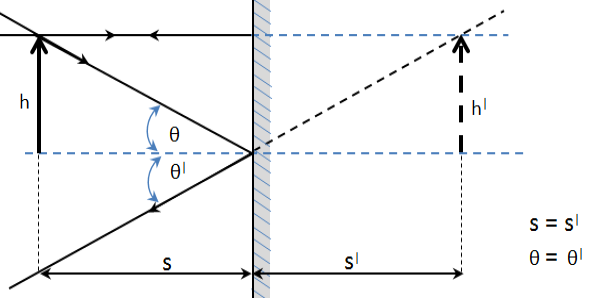 --- - Hukum pemantulan berbunyi sebagai berikut: **a.** Sinar datang, garis normal, dan sinar pantul terletak pada suatu bidang datar. **b.** Besar sudut datang sama dengan besar sudut pantul. **c.** Garis normal adalah garis yang tegak lurus dengan bidang pantul. --- #### Jenis- jenis Pemantulan - **Pemantulan teratur** Pemantulan cahaya ini disebabkan oleh permukaan bidang bantul yang rata, sehingga cahaya yang terpantul menjadi teratur. - **Pemantulan baur** (difus) Pemantulan cahaya yang disebabkan oleh permukaan bidang pantul yang tidak rata, sehingga cahaya yang terpantul menjadi ke segala arah. --- #### I.1. Pemantulan pada Cermin Datar Sifat: - Jarak benda sama dengan jarak bayangan. - Perbesaran sama besar ###### `$$S=S'$$` ###### `$$h=h'$$` ###### `$$m = -\frac{S'}{S}=\frac{h'}{h}=1$$` --- Keterangan: - *S* = jarak benda terhadap cermin (jika **+** benda nyata di depan cermin, **-** maya di belakang cermin) - *S'* = jarak bayangan terhadap cermin (jika **+** bayangan nyata di depan cermin, **-** maya di belakang cermin) - *m* = perbesaran - *h* = tinggi benda - *h'* = tinggi bayangan --- #### I.2. Pemantulan pada Cermin Cekung 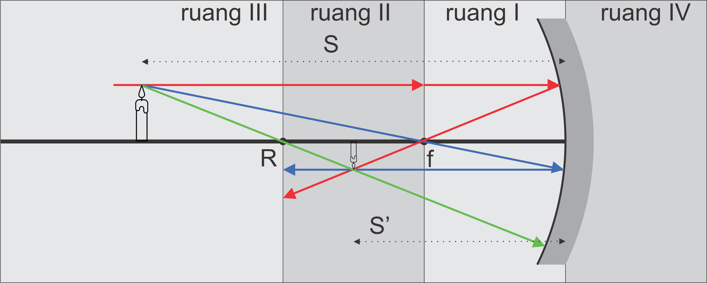 --- Sifat Cermin cekung: - Konvergen/mengumpulkan sinar - Titik fokus berada di depan cermin (nilainya selalu positif) --- Sinar Istimewa pada Cermin Cekung - Sinar yang datang sejajar sumbu utama akan dipantulkan melalui titik fokus. - Sinar yang datang melalui titik fokus akan dipantulkan sejajar sumbu utama. - Sinar yang datang melalui pusat kelengkungan akan dipantulkan kembali melalui titik pusat kelengkungan cermin. --- ###### `$$\frac{1}{f}=\frac{1}{S}+\frac{1}{S'}$$` ###### `$$m = -\frac{S'}{S}=\frac{h'}{h}$$` --- Keterangan: - *f* = fokus (**+**) - *S* = jarak benda terhadap cermin - *S'* = jarak bayangan terhadap cermin - *m* = perbesaran - *h* = tinggi benda - *h'* = tinggi bayangan --- #### I.3. Pemantulan pada Cermin Cembung 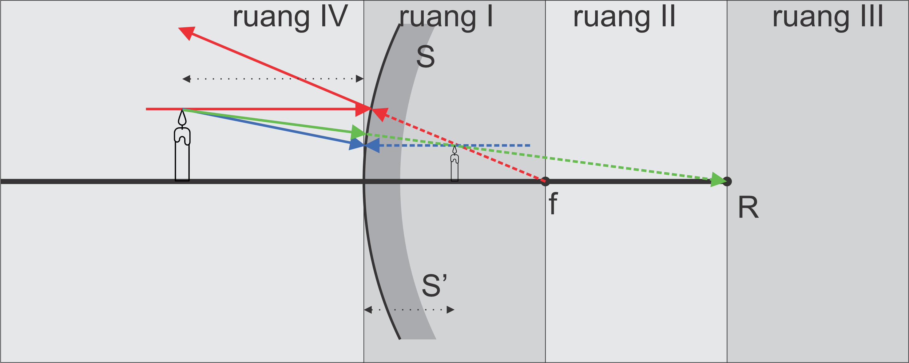 --- Sifat Cermin cembung: - Divergen/menyebarkan sinar - Titik fokus berada di belakang cermin (nilainya selalu negatif) - Bayangan yang dihasilkan selalu maya, tegak, dan diperkecil - Bayangan terletak di belakang cermin --- Sinar Istimewa pada Cermin Cembung - Sinar yang datang sejajar sumbu utama akan dipantulkan seolah berasal dari titik fokus. - Sinar yang datang menuju titik fokus akan dipantulkan sejajar sumbu utama. - Sinar yang datang menuju pusat kelengkungan akan dipantulkan kembali melalui titik pusat kelengkungan cermin. --- ###### `$$\frac{1}{f}=\frac{1}{S}+\frac{1}{S'}$$` ###### `$$m = -\frac{S'}{S}=\frac{h'}{h}$$` --- Keterangan: - *f* = fokus (**-**) - *S* = jarak benda terhadap cermin - *S'* = jarak bayangan terhadap cermin - *m* = perbesaran - *h* = tinggi benda - *h'* = tinggi bayangan --- ### Pembiasan - Pembiasan cahaya merupakan peristiwa perubahan arah rambat cahaya ketika berpindah dari satu medium ke medium lain yang kerapatan optiknya berbeda. --- 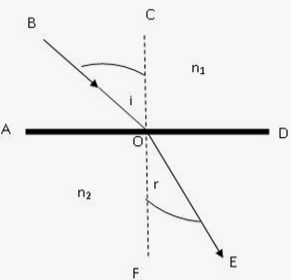 --- #### a. Pembiasan pada satu bidang datar Hukum Snellius mengenai pembiasan menjelaskan peristiwa pembiasan pada satu bidang datar. Hukum itu berbunyi: - Sinar masuk dari medium renggang menuju medium rapat dibiaskan mendekati garis normal (merapat) - Sinar masuk dari medium rapat menuju medium renggang dibiaskan menjauhi garis normal (merenggang) --- ###### `$$n_1 \sin\theta_i=n_2 \sin\theta_r$$` Keterangan: - *n<sub>1</sub>* = indeks bias medium 1 - *n<sub>2</sub>* = indeks bias medium 2 - *θ<sub>i</sub>* = sudut datang - *θ<sub>r</sub>* = sudut bias --- #### b. Pembiasan pada Plan Paralel 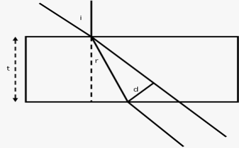 --- - Jika sinar masuk pada kaca plan paralel, sinar mengalami pergeseran, dengan besar pergeseran sebesar *d*. ###### `$$d=\frac{t}{\cos\theta_r}(\sin{\theta_i-\theta_r})$$` Keterangan: - *d* = pergeseran (m) - *t* = tebal plan paralel (m) - *θ<sub>i</sub>* = sudut datang - *θ<sub>r</sub>* = sudut bias --- #### c. Pembiasan pada Prisma 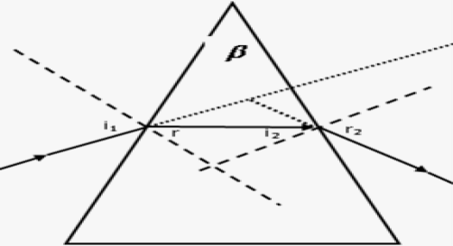 --- - Pada Prisma, sinar masuk dan sinar yang keluar prisma membentuk sudut yang disebut sebagai sudut deviasi yang mengikuti persamaan: ###### `$$\delta=(\theta_{i1}+\theta_{r2})-\beta$$` Keterangan: - *δ* = sudut deviasi - *β* = sudut pembias - *θ<sub>i1</sub>* = sudut datang pertama - *θ<sub>r2</sub>* = sudut bias kedua --- ### Alat Optik #### Lensa - Lensa merupakan benda bening yang dibatasi oleh dua permukaan lengkung atau datar dengan radius kelengkungan tertentu. --- ##### a. Lensa Cembung 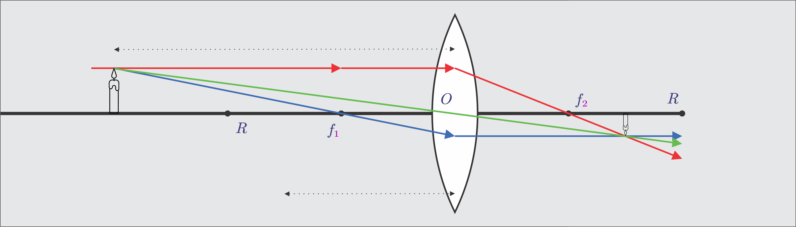 --- - Lensa Cembung merupakan lensa yang dibatasi oleh dua permukaan cembung atau oleh permukaan cembung-datar. Lensa cembung memiliki sifat mengumpulkan sinar (konvergen). Lensa cembung disebut juga lensa positif karena nilai fokusnya berada pada daerah bias. --- Terdapat tiga sinar istimewa pada lensa cembung, yakni: - Sinar yang datang sejajar sumbu utama akan dibiaskan melewati titik fokus (f<sub>2</sub>). - Sinar yang datang melewati titik fokus (f<sub>1</sub>) akan dibiaskan sejajar sumbu utama. - Sinar yang datang menuju pusat optik akan diteruskan atau tidak dibiaskan. --- ##### b. Lensa Cekung 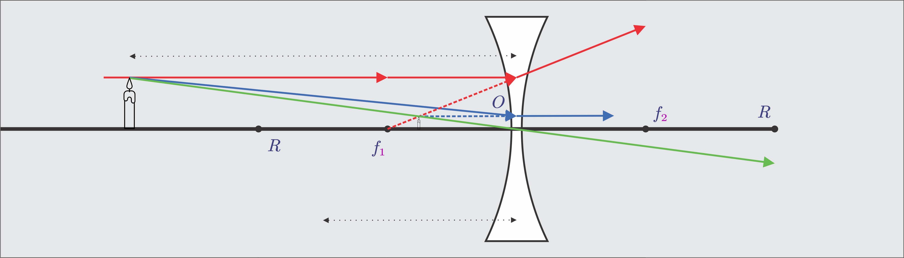 --- - Lensa Cekung merupakan lensa yang dibatasi oleh dua permukaan cekung atau oleh permukaan cekung-datar. Lensa cekung memiliki sifat menyebarkan sinar (divergen). Lensa cekung disebut juga lensa negatif karena nilai fokusnya berada pada daerah sinar datang. --- Terdapat tiga sinar istimewa pada lensa cekung, yakni: - Sinar yang datang sejajar sumbu utama akan dibiaskan seolah berasal dari titik fokus (f1). - Sinar yang datang menuju titik fokus (f2) akan dibiaskan sejajar sumbu utama. - Sinar yang datang menuju pusat optik akan diteruskan atau tidak dibiaskan. --- - Pada lensa, berlaku: ###### `$$\frac{1}{f}=\frac{1}{S}+\frac{1}{S'}$$` ###### `$$m = -\frac{S'}{S}=\frac{h'}{h}$$` --- Keterangan: - *f* = fokus (**-** jika lensa cekung, **+** jika lensa cembung) - *S* = jarak benda terhadap cermin (**+** jika di depan lensa, **-** jika di belakang lensa) - *S'* = jarak bayangan terhadap cermin (**+** jika di belakang lensa, **-** jika di depan lensa) - *m* = perbesaran - *h* = tinggi benda - *h'* = tinggi bayangan --- #### Kuat Lensa ###### `$$P=\frac{1}{f}$$` Keterangan: - *P* = kuat lensa (dioptri) - *f* = fokus lensa (dalam meter) Jika fokus lensa dalam cm, persamaan di atas menjadi: ###### `$$P=\frac{100}{f}$$` --- ### Alat Optik #### Mata dan Kaca Mata 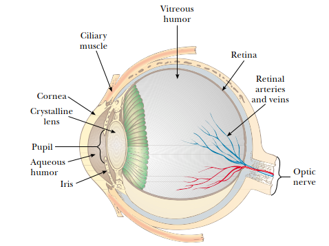 --- - Mata merupakan alat optik, menyerupai kamera yang memfokuskan cahaya untuk menghasilkan citra yang jelas. Namun mekanismenya jauh lebih rumit. - Cahaya melewati bagian transparan yang disebut kornea, lalu melewati bukaan pada iris, yang disebut pupil, lalu melalui lensa mata. - Iris, bagian mata yang berwarna, berfungsi mengatur banyaknya cahaya yang masuk ke mata. - Kornea dan lensa memfokuskan cahaya di retina untuk menghasilkan bayangan. --- - Retina terdiri dari jutaan reseptor untuk mengirim sinyal ke otak ketika ada bayangan terbentuk di retina. - Bayangan akan terbentuk dengan tajam di retina jika benda berada antara jauh tak hingga dan 25 cm. Ini disebut sebagai *titik dekat mata*. - Semakin tua seseorang, semakin pula titik dekat ini berubah. Bisa menjadi semakin dekat (rabun jauh) atau menjadi semakin jauh (rabun dekat) --- ##### Rabun Dekat (Hipermetropi) - Penderita rabun dekat memiliki kesulitan melihat objek yang berjarak dekat, tetapi tidak mengalami kesulitan untuk melihat benda jauh. - Ini disebabkan oleh kemampuan lensa yang tidak lagi dapat berakomodasi dengan baik, sehingga bayangan benda jarak dekat terbentuk di belakang retina. - Penderita rabun dekat memiliki *titik dekat (**punctum proximum**) lebih dari 25 cm*. Sementara mata normal memiliki titik dekat 25 cm. - Dibantu dengan kaca mata berlensa cembung. --- 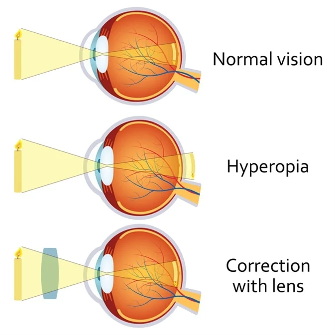 --- - Untuk membuat benda di *x* memiliki bayangan di titik dekat penderita, dibutuhkan lensa cembung dengan fokus: ###### `$$\frac{1}{f}=\frac{1}{S}+\frac{1}{S'}=\frac{1}{x}+\frac{1}{-PP}$$` ###### `$$\frac{1}{f}=\frac{1}{x}-\frac{1}{PP}$$` Kuat lensa: ###### `$$P=\frac{100}{f}=\frac{100}{x}-\frac{100}{PP}$$` ##### Rabun Jauh (Miopi) - Penderita rabun jauh memiliki kesulitan melihat objek yang berjarak jauh, tetapi tidak mengalami kesulitan untuk melihat benda dekat. - Ini disebabkan oleh kemampuan lensa yang tidak lagi dapat berakomodasi dengan baik, sehingga bayangan benda jarak jauh terbentuk di depan retina. - Penderita rabun jauh memiliki *titik jauh (**punctum remotum**) kurang dari ∞*. Sementara mata normal memiliki titik jauh ∞. - Dibantu dengan kaca mata berlensa cekung. --- 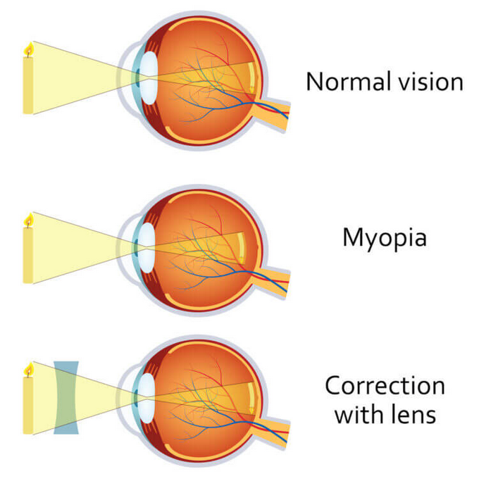 --- - Untuk membuat benda yang berada di ∞ mempunyai bayangan di titik jauh penderita, dibutuhkan lensa cekung dengan fokus: ###### `$$\frac{1}{f}=\frac{1}{S}+\frac{1}{S'}=\frac{1}{∞}+\frac{1}{-PR}$$` ###### `$$\frac{1}{f}=-\frac{1}{PR}$$` Kuat lensa ###### `$$P=\frac{100}{f}=-\frac{100}{PR}$$` --- 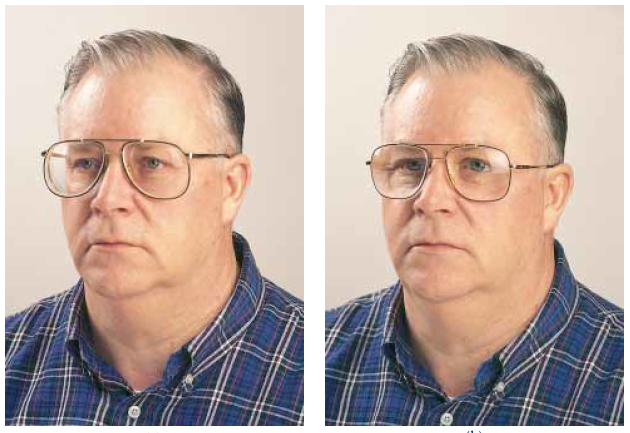 --- #### Kaca pembesar - Kaca pembesar adalah alat optik yang paling sederhana, karena hanya terdiri dari satu lensa cembung saja. - Ukuran bayangan di retina tergantung pada sudut *θ* yang dibentuk benda terhadap mata. Semakin besar sudut, semakin besar bayangan. - Sudut *θ* semkin besar ketika benda semakin dekat dengan mata, dengan *θ* maksimal pada jarak 25 cm. --- - Untuk memperbesar *θ*, dapat diletakkan sebuah lensa cembung di antara benda dan mata, dengan benda terletak di antara lensa dan titik fokusnya. - Lensa akan membentuk bayangan maya, tegak, dan diperbesar. - *Perbesaran angular* **m** adalah perbandingan antara sudut yang dibentuk benda terhadap lensa dan sudut benda terhadap mata. --- 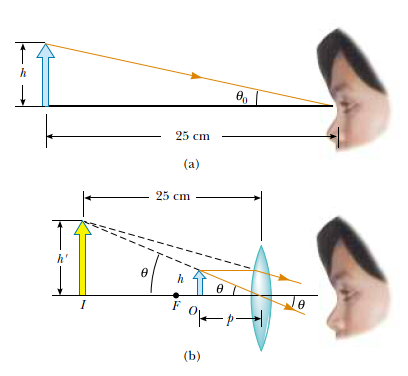 --- ###### `$$m = \frac{\theta}{\theta_0}$$` - Perbesaran angular maksimal ketika bayangan berada pada titik dekat mata, 25 cm, `$$\frac{1}{f}=\frac{1}{S}+\frac{1}{S'}=\frac{1}{S}+\frac{1}{-25 cm}$$` ###### `$$S=\frac{25f}{25+f}$$` --- - Untuk sudut kecil, berlaku `$\tan{\theta_0}≈\theta_0≈\frac{h}{25}$` dan `$\tan{\theta}≈\theta≈\frac{h}{S}$` `$$m_{max}=\frac{\theta}{\theta_0}=\frac{h/S}{h/25}=\frac{25}{S}=\frac{25}{\frac{25f}{25+f}}$$` ###### `$$m_{max}=1+\frac{25 cm}{f}$$` (mata tak berakomodasi) --- - Perbesaran angular minimal ketika bayangan berada pada tak hingga, ∞, `$$\frac{1}{f}=\frac{1}{S}+\frac{1}{∞}=\frac{1}{S}$$` ###### `$$S=f$$` ###### `$$m_{min}=\frac{\theta}{\theta_0}=\frac{h/f}{h/25}=\frac{25}{f}$$` (mata berakomodasi maksimum) --- #### Mikroskop - Lup atau kaca pembesar memiliki Perbesaran yang terbatas. Perbesaran yang lebih besar dapat diperoleh dengan mengombinasikan dua lensa atau lebih. - Mikroskop adalah salah satu alat optik yang menggunakan lebih dari satu lensa. - Secara sederhana, diagramnya dapat digambarkan sebagai berikut: --- 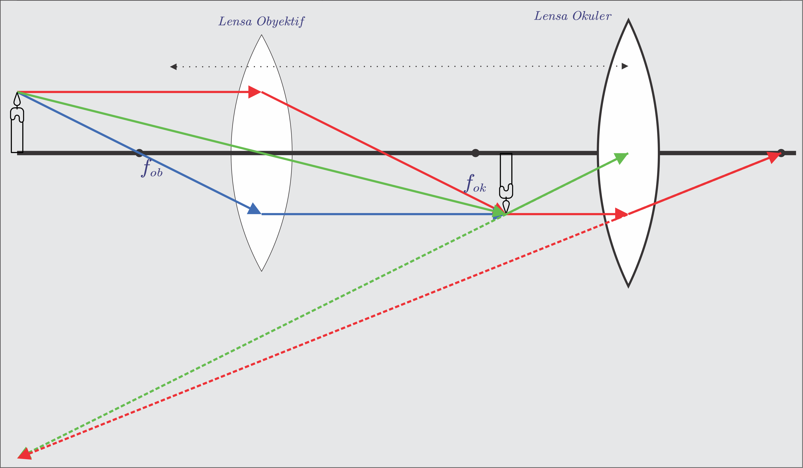 --- - Lensa obyektif memiliki fokus kecil (kurang dari 1 cm). Lensa okuler memiliki fokus sedikit lebih besar. - Kedua lensa terpisah jarak sebesar *L*, yang lebih besar dari *f<sub>ok</sub>* maupun *f<sub>ob</sub>*. Sedemikian sehingga `$L=S'_{ob}+S_{ok}$` - Benda ditempatkan sedikit di luar *f<sub>ob</sub>*, dan membentuk bayangan **nyata, terbalik dan diperbesar**. - Bayangan lensa obyektif menjadi benda untuk lensa okuler. - Lensa okuler membentuk bayangan **maya, terbalik dan diperbesar**. --- - Lensa obyektif memiliki perbesaran: ###### `$$m_{ob}=-\frac{S'_{ob}}{S_{ob}}$$` --- - Lensa okuler memiliki perbesaran: - Tanpa akomodasi (`$S'_{ok}=∞$`) `$$S_{ok}=f_{ok}$$` `$$L=S'_{ob}+f_{ok}$$` ###### `$$m_{ok}=\frac{25\space cm}{f_{ok}}$$` --- - Akomodasi maksimum (`$S'_{ok}=25\space cm$`) `$$\frac{1}{f}=\frac{1}{S_{ok}}+\frac{1}{25\space cm}$$` `$$L=S'_{ob}+S_{ok}$$` ###### `$$m_{ok}=\frac{25\space cm}{f_{ok}}+1$$` - Perbesaran total ###### `$$m_{total}=m_{ob}+m_{ok}$$` --- Keterangan: - *f<sub>ok</sub>* = fokus lensa okuler - *f<sub>ob</sub>* = fokus lensa obyektif - *L* = panjang mikroskop - *m* = perbesaran --- #### Teropong Bintang - Teropong bintang juga terdiri dari dua lensa, *obyektif* dan *okuler*, dengan *f<sub>ok</sub>* jauh lebih kecil dari *f<sub>ob</sub>*. - Teropong bintang tidak menggunakan lensa pembalik ataupun cermin. --- Perbesaran sudut teropong bintang - Tanpa akomodasi ###### `$$m_{}=\frac{f_{ob}}{f_{ok}}$$` ###### `$$L=f_{ob}+f_{ok}$$` --- - Akomodasi maksimum ###### `$$m_{}=\frac{f_{ob}}{S_{ok}}$$` ###### `$$L=f_{ob}+S_{ok}$$` --- #### Teropong Bumi/Medan - Teropong bumi terdiri dari tiga lensa cembung, *obyektif* dan *okuler*, dan satu lensa pembalik. --- Perbesaran sudut teropong buni - Tanpa akomodasi ###### `$$m_{}=\frac{f_{ob}}{f_{ok}}$$` ###### `$$L=f_{ob}+4f_{p}+f_{ok}$$` --- - Akomodasi maksimum ###### `$$m_{}=\frac{f_{ob}}{S_{ok}}$$` ###### `$$L=f_{ob}+4f_{p}+S_{ok}$$` ---